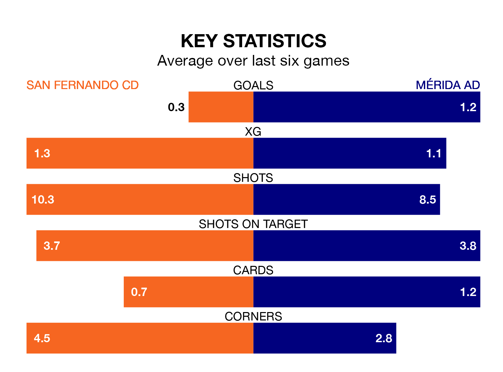

Mérida AD face San Fernando CD on Sunday seeking to protect their long unbeaten run in Primera Division RFEF Group 2.
Mérida AD are unbeaten in six, with three wins and three draws, ahead of the 7pm kick-off.
They face a San Fernando CD team who have drawn three and lost three over the same number of games.
In the last 10 years, San Fernando CD and Mérida AD have played each other on eight occasions. San Fernando CD won four of them, Mérida AD three, and they drew once.
On average, San Fernando CD scored 1.1 goals and Mérida AD 1.0 in those matches.
Their last meeting was on November 18, when San Fernando CD won 2-0 away.
San Fernando CD are 16th in the table after 26 games, of which they have won seven and drawn six, earning 27 points.
Mérida AD are one place ahead of the home team in 15th, with seven wins and seven draws putting them on 28 points.
With 20 goals in 26 games so far this season, the visitors are scoring at below the league average rate with 0.8 goals per game. And they are conceding more than average, letting in 30 goals at a rate of 1.2 per game.
San Fernando CD are also below average scorers, with 1.0 goal per game, compared to a league average of 1.1. They have conceded 1.3 goals per game.
In Daniel Aquino Pintos, San Fernando CD have one of the league's most on-form strikers so far this season. He has notched seven goals in 22 appearances, to sit sixth in the scoring charts.
His goal rate of one every 256 minutes is quicker than that of Daniel Sandoval Fernández, Mérida AD's top scorer with a goal every 352 minutes, and a total of four goals in 18 games.
San Fernando CD's last match was on March 3, a 1-0 loss against CD Castellón.
Mérida AD beat CD Atlético Baleares 2-1 last time out, also on March 3, with Daniel Rodríguez Vázquez and Iñaki Elejalde Rodríguez on the scoresheet.
Updated: 09:34 (UTC), 08/03/24